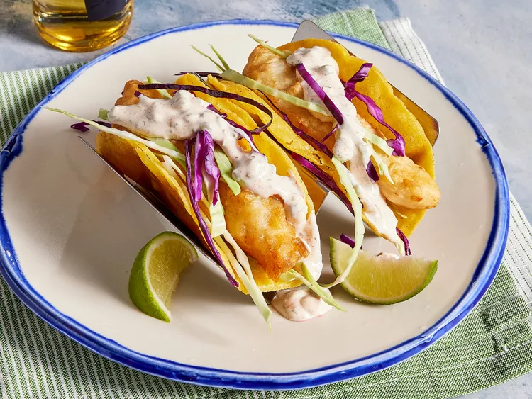

These crispy fish tacos with shredded cabbage and a spicy homemade white sauce are just delicious! Serve with homemade pico de gallo and lime wedges to squeeze on top.
You don’t have to leave your house to enjoy perfect fish tacos! This beer-battered fish taco recipe, topped with a homemade white sauce and fresh cabbage, will quickly become a mainstay in your rotation.
Ingredients
Beer Batter:
1 cup all-purpose flour
2 tablespoons cornstarch
1 teaspoon baking powder
½ teaspoon salt
1 cup beer
1 egg
White Sauce:
½ cup plain yogurt
½ cup mayonnaise
1 lime, juiced
1 jalapeno pepper, minced
1 teaspoon minced, capers
½ teaspoon dried oregano
½ teaspoon ground cumin
½ teaspoon dried dill weed
Fish Tacos
1 quart oil for frying
1 pound cod fillets, cut into 2 to 3 ounce portions
2 tablespoons all-purpose flour, or more as needed
1 (12 ounce) package corn tortillas
½ medium head cabbage, finely shredded
Steps:
Step 1
Make beer batter: Combine flour, cornstarch, baking powder, and salt in a large bowl. Blend beer and egg in a separate bowl, then quickly stir into flour mixture until combined with a few lumps remaining.
Step 2
Make white sauce: Mix together yogurt and mayonnaise in a medium bowl. Gradually stir in fresh lime juice until consistency is slightly runny. Season with jalapeño, capers, cayenne, oregano, cumin, and dill.
Start fish tacos: Heat oil in a deep-fryer to 375 degrees F (190 degrees C).
Step 4
Dust fish pieces lightly with flour. Set aside.
Step 5
Dip floured fish pieces into beer batter. Set aside.
Step 6
Fry in hot oil until crisp and golden brown. Drain on paper towels. Lightly fry tortillas in hot oil until just crisped, but not too crisp. Drain on paper towels.

Step 7
Place fried fish in tortillas; top with shredded cabbage and white sauce.